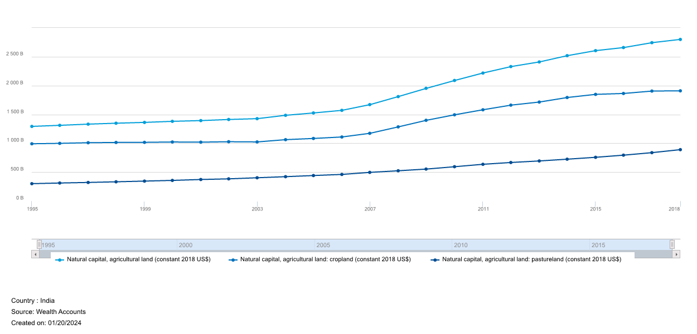

World Bank’s Wealth Accounts provide an estimate for India’s agricultural land value for various categories in 2018 USD:
 
World Bank’s estimate for total value of cropland and pastureland for 2018 was ~USD 2,070 per capita. This would make it about as large as the GDP in 2018 (current prices USD). So agricultural land value is about 1 times GDP. McKinsey’s estimate of the global average land value is about 2 times GDP. I’d request the reader to read my post on MicKinsey’s estimate (everything before the section on their methodology, at least) before they read this post further.
For the following two reasons, I think India’s land value would be easily closer to, or maybe more than, Australia (~3 times GDP) than the global average:
If we take both World Bank’s Wealth Accounts and McKinsey’s estimate to be true, non-agricultural land value of India would be (2-1 =) 1 times GDP while agricultural land value would be 1 times GDP. Given that non-agricultural activities contribute more than 83% of India’s GDP, non-agricultural land value would, I guess, obviously be higher.
In a previous post, I discussed Free A Billion Pvt Ltd’s estimate for India’s surplus land held by the government. And I showed how it is, at the very least, about Rs. 88 lakh crores (1 lakh crore = 1 trillion). This was from 2018, when our GDP was about Rs. 183 lakh crores (assuming an exchange rate of 1 USD = Rs. 68). That is, surplus government land was about .5 times GDP, more than McKinsey’s estimate for total (not only surplus) government land.